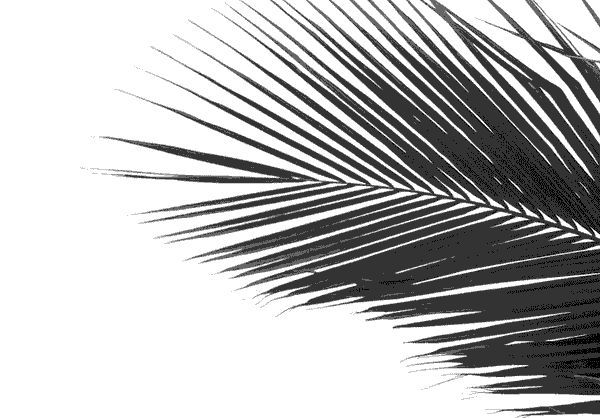

Stemming from a stint of UAE-based work, SYPartners was asked to help
with the strategic alignment and design of the Higher Committee of Human
Fraternity—a first-of-its-kind Committee based on elevating shared
ideals of peace, brotherhood, and coexistence. As part of a large team,
I helped organize and design a "Celebration of Human Fraternity" in
September, then travelled to Abu Dhabi to support the strategic of
organization of the of the Higher Committee towards the end of 2019.
「 CONTEXT 」
As part of the UAE's 2019 "Year of Tolerance" events, a visit from the
Pope was organized for February 2019, notable for being the first
official papal visit to an Arabian state in nearly 200 years.
This meeting was built off coordination between the UAE government,
Al-Azhar University, and the Vatican, and coalesced in the signing of
The Document on Human Fraternity for World Peace and Living Together.
This document—now signed by the Pope and Grand Imam of Al-Azhar
university—was a statement of shared intent for the reconciliation of
people of goodwill in service of universal peace.
To show its continued commitment to this promise, the Higher Committee
of Human Fraternity was created, to advance the ideals represented in
the document. Members from this committee (at least initially) would
include members from all three of the Abrahamic faiths—Judaism,
Christianity, and Islam—in addition to several local leaders from the
UAE.
Simultaneously, the UAE announced its intent to build the Abrahamic
Family House—a structure containing a mosque, church, and synagogue on a
shared plot, aimed at demonstrating ideals of peaceful coexistence. An
open call to architects was made for the design.
On September 19, 2019, the Celebration of Human Fraternity, convened
religious and political leaders to begin a journey towards a more
peaceful future for all. It included a panel conversation with members
of the Higher Committee of Human Fraternity, the unveiling of Sir David
Adjaye's design for the Abrahamic Family House, and a musical
performance from interfaith leaders.
「 PLANNING THE EVENT 」
Our role as coordinators in the event was to set the vision and help
coordinate production and event logistics. We worked with multiple
partners organizations to curate speakers, performers, and experiences
for the afternoon event.
In addition to content from the speakers, we wanted everything from
catering to chairs to match the design intent of the day, rooted in the
rich history three religions within the context of the UAE.
「 EXPERIENCE DESIGN 」
For SYP, this was a pretty different audience. The attendee list
included celebrities, pastors, rabbis, priests, imams, and political
leaders. The crowd would be assembled for different, varying
reasons—perhaps primarily to meet and talk to each other. In relation to
this, how would we create a deeply resonant meeting with meaningful
activities and events?
With all of our partners, we spent weeks carefully creating a single
"showflow" to express the full arc of experience for the event. Through
several rounds of brainstorm and review, we landed on a final
experience.
The final experience began with a musical performance.
Inspired by music's ability to bridge political and cultural barriers, I
imagined a performance that brought all three religions into a space of
shared beauty. Musicians that represented each of the three religions
would play as attendees entered, with a twist revealing that these
musicians were in fact playing together for the first time.
The Higher Committee at this point had not coalesced a true strategy and
even members. For a celebration of beginning, a moment of emergent music
felt most appropriate to the Committee's intent. Just like a set of
musicians playing for the first time—perhaps the estranged Abrahamic
family might working beyond difference towards a shared moment of
beauty.
Next, guests were welcomed by Priya Parker, our MC and host for the
night. She introduced a video from the Poper, then transitioned into a
curated panel between the Higher Committee for Human Fraternity. Since February, not much public-facing activity has occurred—as such,
it was a unique opportunity to show some of the strategic and
foundational progress that had been made so far.
Sir David Adjaye joined the panelists onstage for we had the
unveiling of the winning design for the Abrahamic Family House.
Adjaye played a video flythrough of the architectural model, and spoke
briefly on the conceptual origins of the winning design.
Finally, attendees were left to mingle and explore the space.
They could look at the unveiled architectural model, or explore two
exhibits which showed off signed copies of the Document of Human
Fraternity, and showcased key passages on peace from the Tanakh, the
Bible, and the Qu'ran. As a final touch, attendees were presented a
custom-made incense holder with incense and a thank-you note. The
incense was a representation of UAE's unique scent culture, and
presented a chance to extend the aroma of the festivities.
「 BRANDING 」
The Higher Committee of Human Fraternity was intended to represent
global faith leaders, from the three Abrahamic Faiths, but convened by
the UAE. As a result, any visual, tonal, or experiential expression
would need to adopt a voice that was genuine to all their faiths, but
also true and naturally hosted within the UAE.
This led to a few main questions:
☞ Judaism, Christianity, and Islam already have rich histories of
iconography, metaphor, and symbology. Visually, what would be the best,
sensitive expression of what these disparate (and sometimes combative)
cultures shared in common?
☞ The UAE itself also has a rich visual culture related to its
roots in Bedouin culture and it unique geographical, historical, and
cultural roots. How would expression be done in a way that felt like a
genuine hosting from the UAE as a culture?
☞ The common fear with interfaith dialogue (or any combination of
cultures) is dilution. Sometimes—in an attempt to find commonality—that
which is disparate or disagreed is ignored rather than celebrated. What
could this committee—and consequentially the design—do to show a marked
commitment to the core beliefs and values of each religious system?

We worked with a small team from sister company IDEO to create brand for
the event (also as a gesture of branding for the committee/movement
itself).
The brand is perhaps best described as neutrality. Since so much of
religious symbology is tied to specific belief systems, we thought it
disingenuous and perhaps overdone to create yet another symbol, another
shaking hand in the sea of embracing, olive branch interfaith logos.
Further, since the goal was genuine coexistence between three dissimilar
faiths, it also felt strange to wrap them all in a strong, branded
wrapper.
The visual markers then were a relatively simple system of type and
abstract forms taken from ink and leaves around the world. GT Sectra—as
a typeface—is filtered through three construction methods that all
subtly reference the progression of calligraphic forms. This (along with
the use of ink textures) becomes a subtle nod to each religion's rich,
textual culture. Natural forms and delicate typography focus on the
shared tactility of human experience.
Rather than borrowing heavily from a single, strong cultural influence,
the end result is a visual system aimed at creating a deliberate,
objective space. Thus, hopefully each religion's imagery and philosophy
can take prescience and form, just as we'd like them to within the
shared space of peaceful coexistence and dialogue.
「 SPACE DESIGN 」
We worked with artist Randall Peacock and co. to design a beautiful
remix of the Forum at the Public Library in New York's Bryant park. The
final set design was meant as an expression and abstraction of richly
layered, organic fabrics, and an approximation of the muted tones of the
desert.
Lighting was intended for use as both way finding and symbol.
While hanging pendants overhead turned on and off as focusing elements
in the room, each sphere also referenced an abstraction of stars and
galaxies. This holds genuine meaning in both the UAE (where Bedouins
often navigated via the stars) and the three religions (where stars form
important symbols to religious figures such as Abraham, promised
descendants "as many as the stars" in the Judeo-Christian tradition).
A large circular dias functioned as the central focus of the
room, while chunks of glowing resin in the center represented a
metaphorical "hearth." By having attendees circle up around this shared
fire, the ambition was to make what could be a stiff, formal occasion
feel more like the primal gathering-point of a campfire.
Two displays were placed in the room to spark conversation, as
mentioned above.
One displayed facsimiles of the Document of Human Fraternity, next to a
projected interactive version of the Document. Next to it, a plinth
showed a projected animation of shared thematic passages around
hospitality and coexistence taken from the Torah, the Bible, and the
Qur'an. Each displayed first in its original language (Hebrew, Coinae
Greek, and Arabic respectively), then in an English translation. Each
display included English and Arabic descriptions to accommodate the
comfort of attendees.
The custom-built architectural model was placed on the other side of
the room.
To maintain the reveal, it was kept under a frosted acrylic cover, which
allowed light to hint at the contents without spoiling the design.
Descriptive text from the architect was printed in vinyl around the
model in Arabic and English. I designed the layout to work in harmony
with both languages' reading direction, while maintaining relative
symmetry
「 IMPACT 」
With the speed and pace of event planning and production the public
impact of this event was hard to gauge in a systemic way. In a flurry of
12 hours, the event and stage was built and torn down as an army of
stagehands and cherrypickers arrived on the stage.
Publicly, several news articles showed some of the energy and intention
around the event, while the act of organization itself worked as a
strategic forcing function for the Higher Committee. From many of the
attendees, meanwhile, the response was generally positive. Many of the
interfaith leaders saw the event as a novel and beautiful take on what
are normally bland formal events. One leader personally thanked each of
us on his way out. Perhaps most importantly, our client cried in pride
and relief when the event wrapped.
「 POST-EVENT SUPPORT 」
After the event, the work ahead was about as endless. While the design
was decided and the Committee convened, the Higher Committee as an
organization was still in nascent stages when it came to strategy and
organization. Through a series of leadership meetings and interviews, we
helped begin to gather insights and thinking from each of the members,
and structure it into a beginning strategy including working cadence and
organizational design. This work is ongoing and has continued even after
I had to return back to New York.
In terms of raw output, this really just means a lot of slide decks.
I've put some best-in-class examples of slides from this phase below:
《 Closing Thoughts 》
In many ways, this felt like a once-in-a-lifetime opportunity. How often
does a designer get the chance to work on a project of this scale and
ambition? In particular, I enjoyed the way this project drew such a full
integration of design out of me. It's not often at SYP that I've been
able to bridge theological reference with the intensity of experience
design I've become accustomed to at work.
I learned so much from this project. At a high level, it forced me to
closely consider the systems of religion and society throughout the
world, and specifically in the Middle East. From a cultural level, I had
so much to learn about UAE culture, but also that of Judaism and Islam.
From a design perspective, it was the first time I had to design or
typeset in Arabic, Greek, and Hebrew… not to mention learning to proof
in ancient languages!
From the other side of this project, it's been hard to tell how much
progress may have actually been made. "Peaceful coexistence on a global
scale" is a big ambition, and the work towards it can be both consuming
and arduous, then easily lost between cultural and legal technicalities.
It still had its moments. At one point, our PM spotted a presentation
we'd designed in a photo we'd sent peeking out from behind the Pope's
shoulder—irrefutable evidence that the Pope has seen my designs.
—or once when we had a two-hour discussion with an ex-Jewish,
ex-Christian, Muslim scholar who wrote his thesis about hospitality to
the stranger as a methodology for spiritual welcome, and for a moment, I
wished we had more time…
—Prouder still was maybe the moment I presented my intent for the set
design to Rabbi Julie, who we'd brought in as an interfaith expert. As I
showed my sketch of a hearth crackling with UAE hospitality, filled with
stars "like the descendants God promised Abraham [in Genesis]—" She
stopped me.